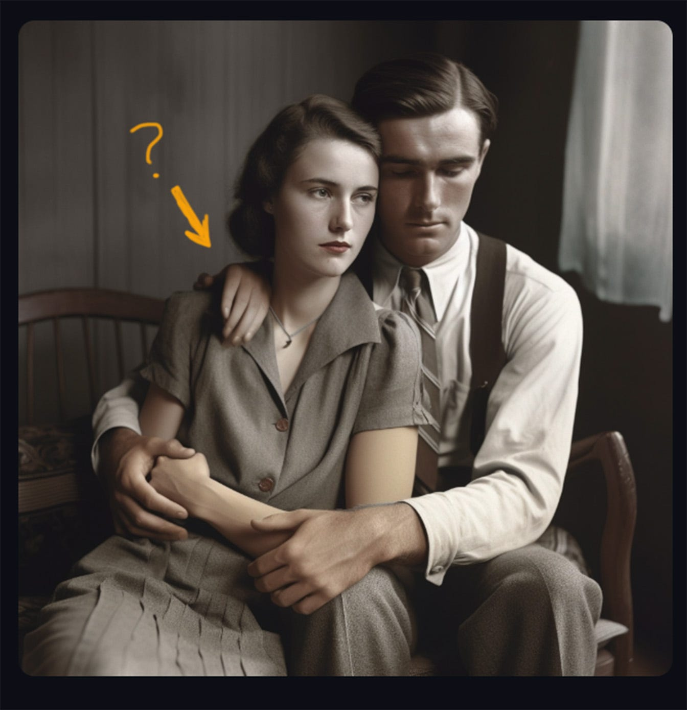
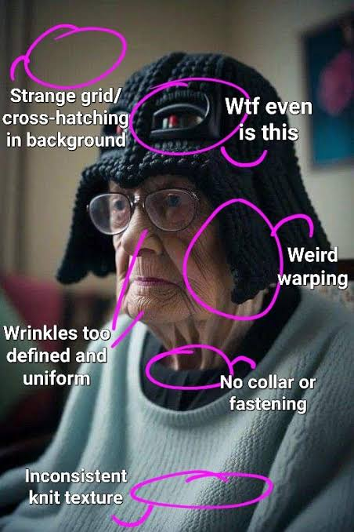

Misinformation
AI can create convincing but false text, images, audio, and video.
A CREATIVE FIELD UNDER PRESSURE
How the misuse of Generative AI affects
the creative field
Generative AI has changed the way people create. It can produce images, text, music, videos, designs, and other creative outputs in only a few seconds.
The problem begins when AI-generated work is presented as entirely human-made, used without permission, or created without considering the artists and creators whose work helped train these systems.
When does useful assistance become creative misuse?
 IMAGE / DATA
IMAGE / DATA
AI can dramatically reduce the time needed to create drafts, concepts, images, and written material.
READ ARTICLE →Repeated AI-generated patterns can make creative work feel generic, derivative, or disconnected from a creator's voice.
READ ARTICLE →Overreliance on generated content can affect opportunities for artists, writers, designers, musicians, and other creatives.
READ ARTICLE →AI can create convincing but false text, images, audio, and video.
Generated media can imitate real people and make fabricated events appear authentic.
Uploading personal or confidential information to AI systems can create privacy risks.
Using AI for everything can weaken independent thinking, research, and creative skills.
No single clue proves that something was made by AI. Instead, look for several unusual patterns and verify the source.

Look for strange fingers, hands, teeth, text, reflections, or objects.

Watch for confusing lines, impossible objects, or details that do not make sense.
Overly smooth textures, strange lighting, or a hazy “too perfect” look may be clues.
QUICK CHECK
Which is the strongest reason to question an AI-generated image?
A CREATIVE FIELD UNDER PRESSURE
This educational website explores how Generative AI can be helpful while also creating ethical, social, and creative challenges.
The goal is not to reject AI. The goal is to use it responsibly, critically, and transparently.
BACK TO TOP ↑Meet the team

Research contributor.

Technical contributor.